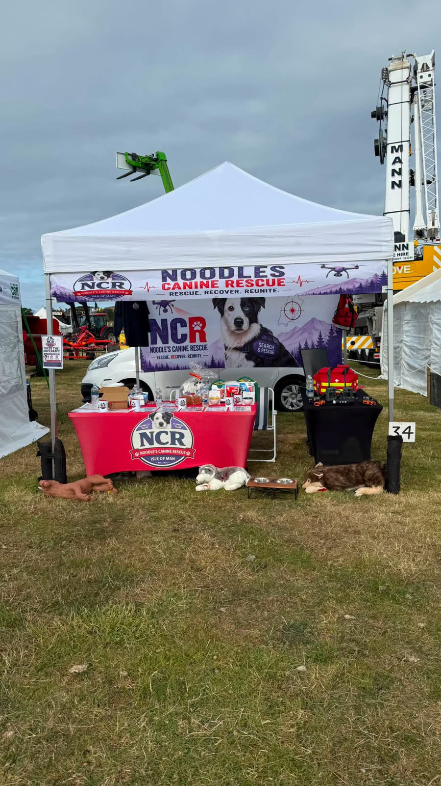
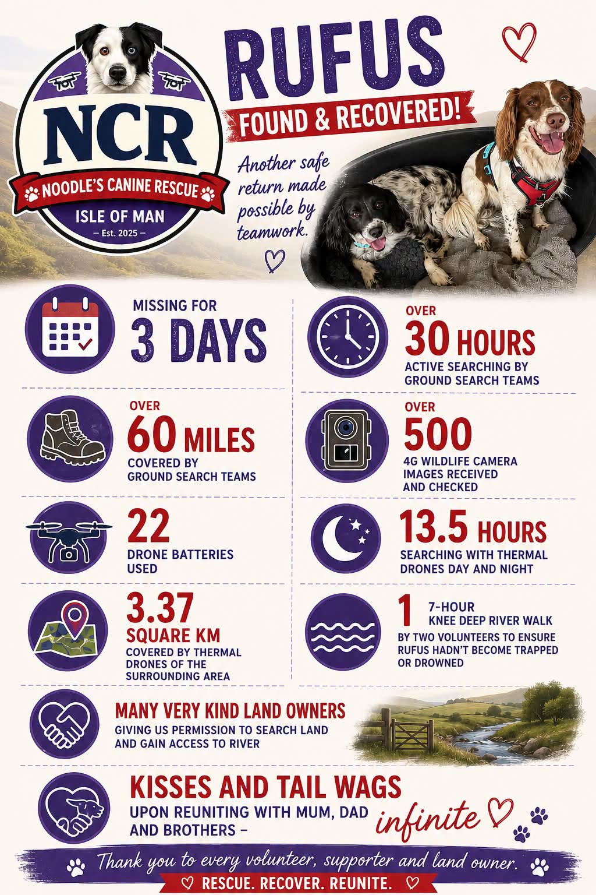
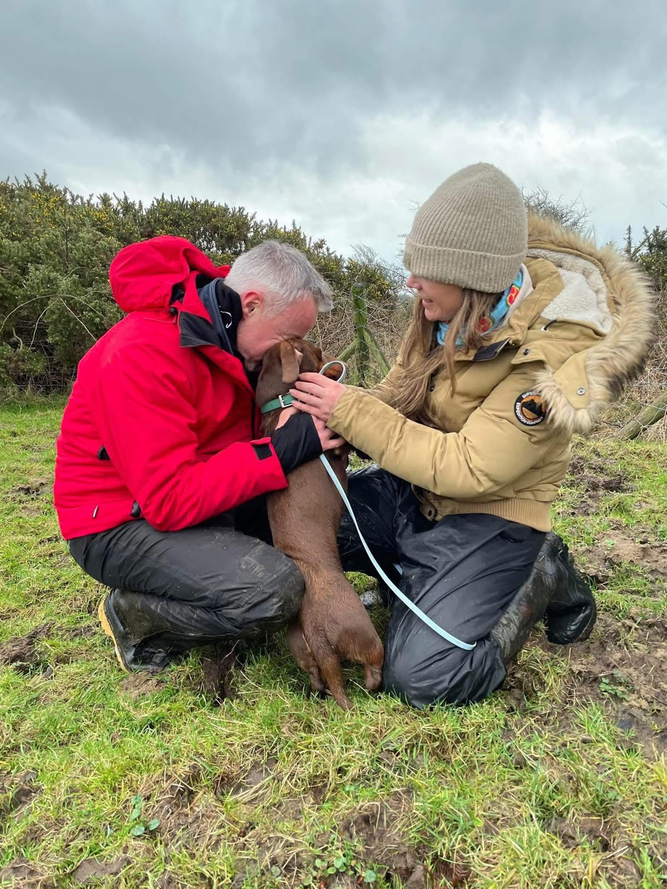
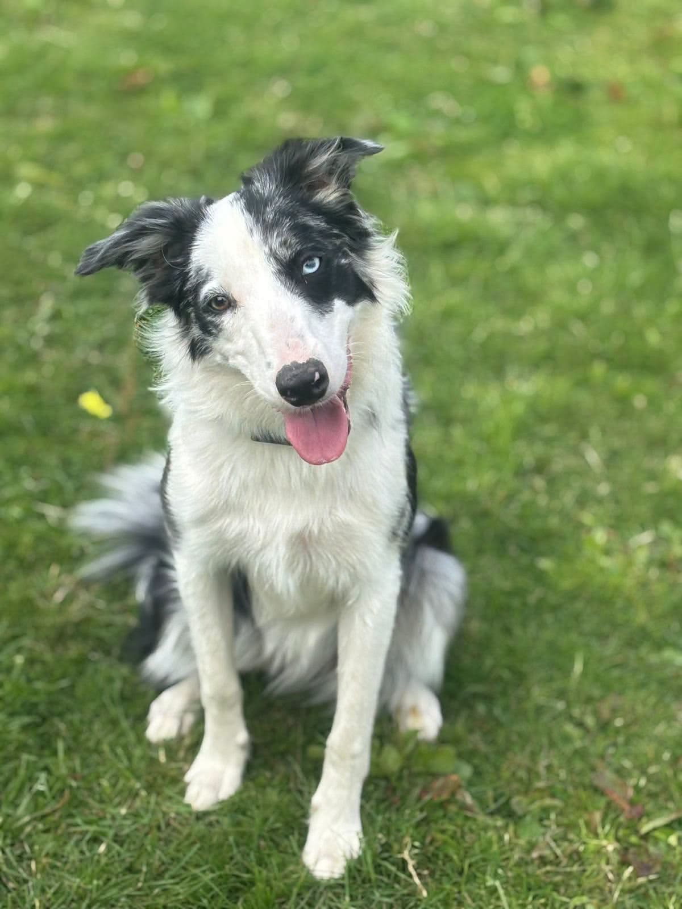

Latest from our canine search and rescue work and charity milestones
Suzie, a cocker spaniel, went missing from her new home in Ramsey during Storm Boelo, after strong winds blew a garden gate open. Her owner, Natasha Lapsley, contacted us after losing sight of her. Volunteers printed and handed out flyers, and the search used thermal binoculars and 4G wildlife cameras. The drone could not fly in the severe weather. With no sightings for two days, searches continued morning, day and night. On the Tuesday she was spotted in a garden two estates away. A resident recognised her from the appeals and flyers and contacted her owner.
The search showed the limits of our current drone in severe weather. We are fundraising for a model that can fly in stronger winds.
We asked owners to keep dogs inside, secured and safe while public displays are on. Peel’s display was on 30 October. Douglas has moved from 5 November to 7pm on 26 November, and Ramsey from 31 October to 7.30pm on 21 November at Mooragh Park. Displays are also planned for 7 November at Laxey Valley Gardens and Glen Mona Community Field.
Reggie had been missing in the Corlea Road area, with appeals covering Cringle, Grenaby and Ballamodha. On the morning of 21 August we posted that he had been found.
We spent both days of the Royal Manx Agricultural Show at Knockaloe Farm. Visitors could see the thermal drone and handheld kit, pick up canine first aid information, and talk to the team about volunteering. Thank you to everyone who came to say hello, and to the dogs who came too.

Rufus was missing for three days. The poster below is the team’s own note from that search. It thanks the volunteers and the landowners who gave permission to search.

We are delighted to announce that Noodle’s Canine Rescue has been officially registered as an Isle of Man charity (No. 1387). This milestone, just over a year after our formation, recognises the hard work of our volunteers and the vital service we provide to the Island’s dogs and families. We thank everyone who supported the registration process.
This status strengthens our governance and fundraising capability.
Dolly, a 13-year-old three-legged Chihuahua, went missing from Ashley Park in Onchan at about midday on 28 May. We asked people in upper Onchan, including Ashley Hill, Ballachrink and around Onchan Primary School, to check gardens and outbuildings and not to shout or chase. Two thermal drone teams covered more than 2.4 km², with flights paused during TT race closures. Ground teams worked the ground close to where she was last seen, plus nearby glens and woodland, and Noodle joined targeted searches while still in training. In an update on the evening of 31 May, we said Dolly had been found in a garden not far from home. She is back with her owner.
Our teams led a complex search for a missing dachshund in treacherous Foxdale and St Marks Country Park terrain. Working alongside landowners and dozens of public volunteers, our thermal drone played a crucial role in locating the dog after more than 50 hours missing. The happy reunion was a powerful reminder of the value of coordinated canine search and rescue.

Searches logged and drone deployments between 28 May 2025 to 8 November 2026. Dogs located directly by the drone: Bruce, Scooby, Toffee and Millie.
Our collie Noodle continues her scent discrimination training and is making excellent progress toward becoming a fully qualified search dog for the organisation. Meanwhile, drone pilots and ground team members are undertaking ongoing certifications and practical exercises to maintain the highest operational standards.
